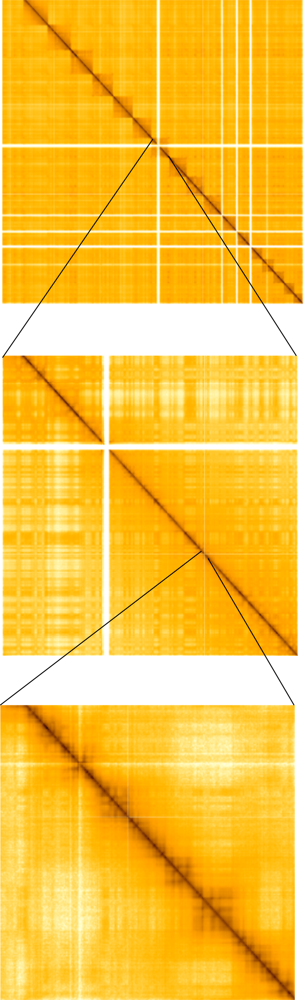
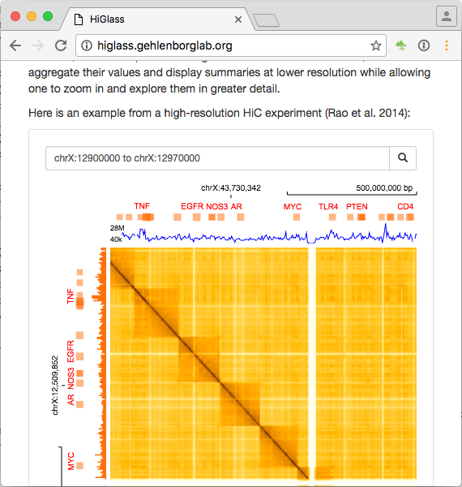
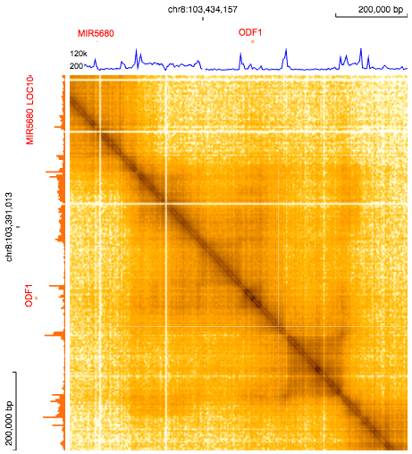
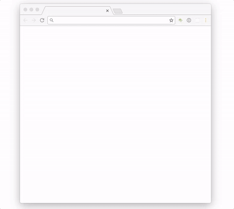
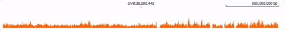

HiGlass
Building a multi-resolution, web-based, Hi-C data display
Peter Kerpedjiev
Gehlenborg Lab
Harvard Medical School
What?
|
Multi-resolution  |
Web-based  |
Hi-C Data Display  |
Why?
Usability

Effortlessly pan and zoom
Why?
Usability

Access viewer from a web page
Why?
Versatility

Zoomable lines
Why?
Versatility

Zoomable bars
Why?
Versatility

Zoomable gene annotations
Why?
Versatility

Zoomable everything
Why?
Comparison

Simultaneously zoom into two different datasets
How?
Client / Server Architecture
- Data resides on the server
- Visualization resides on the client
How?
Data resides on the server (cloud)
Present: Elasticsearch stores a database of tiles
Each tile contains the values that can be seen on the screen at particular zoom level and location
Future: Tiles dynamically loaded from cooler and HiC files
How?
Tile Example:
{
"tile_value": {"max_value": 53137.01228744652, "min_value": 0.0,
"dense": [0.0, 0.0, 0.0, 0.0, 0.0...[65526 more values]...
1639.6605, 2564.1854, 7815.50706, 27623.40794, 0.0],
},
"tile_id": "3.2.2"
}
How?
Visualization resides on the client (web browser)
Converts tile data to a visual representation.
[29.0285, 27.97826,... 36.40484, 21.0694]Becomes
or
How?
Visualization resides on the client (web browser)
Browser keeps track of:
- Zoom Level (0 to 14 for 1KB Hi-C data)
- X range (0 to ~3e9)
- Y range (0 to ~3e9)
- Usability * Effortlessly zoom and pan * Access viewer from a web page * Compare different data sets
- Versatility * Display different types of data * Line * Bar * Gene annotations
- Reproducibility * Share a link to a region of the genome (upcoming) * Request all of the information required to recreate this view
How?
- Tiling * User pans or zooms to a region * Visible tiles are calculated by aggregation * Relevant tiles are returned
- Elasticsearch * All tiling data is stored on elasticsearch
- Pixi.js * Everything is rendered using Pixi.js with graphics card support
What's next
- Cooler Tiles
- HiC Tiles
- User Data Upload
- Better handling of normalization